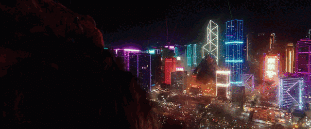

[SPECIAL] King's Axe
Kong reaches over his shoulder, pulls the axe from his back, and immediately surges forward. He leaps toward the opponent and brings the axe down in a heavy slam. The attack applies pushblock.
After the slam, Kong keeps the axe in hand and switches to his axe moveset.
A2, A3, and Ultimate are altered in this state.
A charge meter appears on the left side of the screen and tracks how much beam energy the axe has absorbed. It has two thresholds: 10 charge and 20 charge. Reaching each changes the moveset further.
Once Special comes off cooldown, it can be used again to put the axe away and return to Kong’s base moveset.